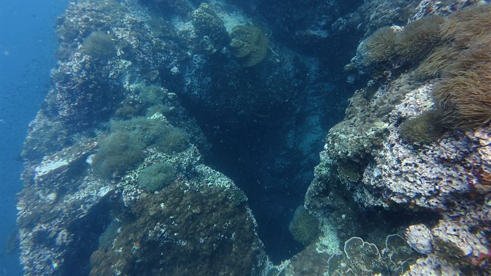
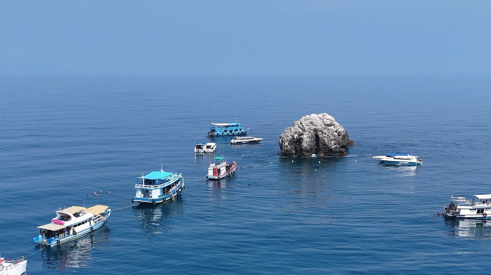
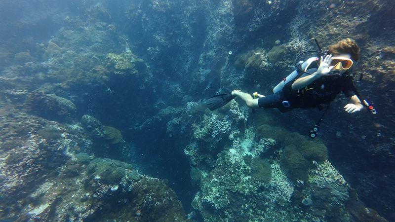
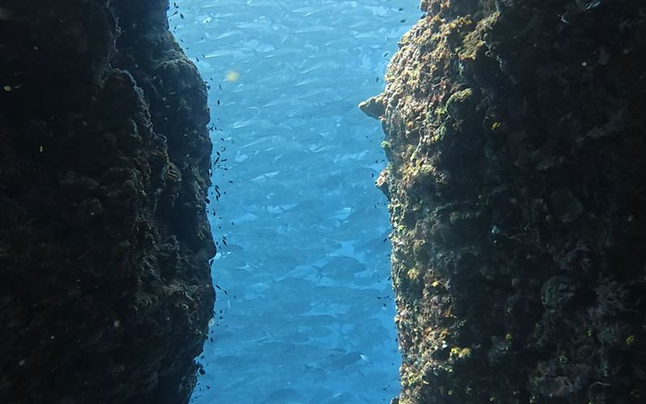
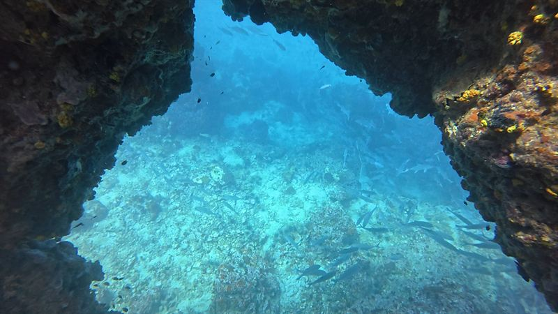
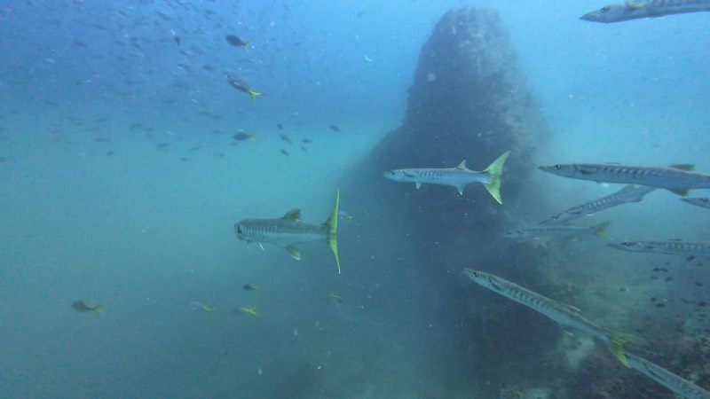
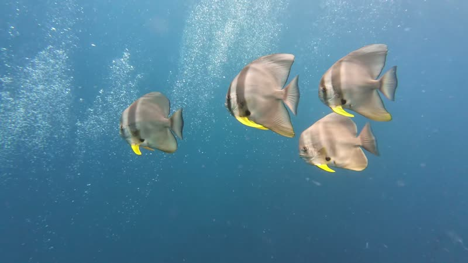

6 m

Obere Öffnung
Hier steigen wir meist ein, damit es durch den Felsen abwärts geht.
Bis Weihnachten fahren wir um 8:00 ab: Treffpunkt am Pier von Chaloklum um 7:45, zurück gegen 13:30–14:00.Warum?

Start / Tauchplätze / Sail-Rock-Guide
Eine Granitspitze allein im offenen Meer zwischen Koh Phangan und Koh Tao, die aus 40 Metern Tiefe bis über die Oberfläche ragt. Schwärme von Barrakudas und Fledermausfischen, ein Durchtauchtunnel namens The Chimney und an manchen Tagen ein Walhai. Hier erfährst du, was dich erwartet, wann du hinfahren solltest und wie du dort tauchst.

Sail Rock · offenes Meer, eine Stunde Fahrt
Der Tauchplatz · Hin Bai
Sail Rock — auf Thai Hin Bai — steht allein im offenen Wasser, weit weg von jedem Riff. Weil es sonst nirgends Schutz gibt, sammeln sich die Fische des offenen Meeres um ihn: Deshalb ist er der beste Tauchplatz im Golf und der, den fast jeder Taucher auf Koh Phangan und Koh Tao sehen will.
Der Felsen fällt nach allen Seiten ab, es gibt also für jedes Niveau die passende Tiefe: Neue Taucher bleiben an den oberen Wänden, brevetierte Taucher umrunden die Spitze tiefer, und Deep-Taucher erreichen den Sandgrund auf 40 Metern.

Die Wände von Sail Rock
The Chimney
Das Markenzeichen von Sail Rock ist ein senkrechter Tunnel mitten durch die Felsspitze. Die obere Öffnung liegt auf 6 Metern, die untere auf 18 Metern, und auf halber Höhe öffnet sich zwischen 10 und 14 Metern ein Fenster in der Wand.
Man kann ihn von oben nach unten, von unten nach oben oder durch das Fenster hinein und hinaus durchtauchen. Wir bevorzugen von oben nach unten: Abwärts vermeidet man jeden unkontrollierten Aufstieg. Ein spezieller Kurs ist nicht nötig — anders als eine Höhle ist der Tunnel nach oben zur Oberfläche offen, im Notfall kannst du also immer direkt aufsteigen. Dein Guide entscheidet am Tag selbst, je nach deinem Niveau.

Hier steigen wir meist ein, damit es durch den Felsen abwärts geht.

Ein Spalt in der Wand auf halber Höhe, ein weiterer Ein- oder Ausgang.

Der Ausgang unten, zurück an die Wand von Sail Rock.
Was du siehst
An Sail Rock geht es um Fische in großer Zahl. Schwärme stehen im Blau vor den Wänden, und die größeren Besucher kommen aus dem offenen Meer, um dort zu fressen.

Große, kreisende Schwärme, oft direkt neben dem Felsen. Das Bild, das die meisten Taucher von Sail Rock mit nach Hause nehmen.

Neugierige Fledermausfische, die nah herankommen, um dich anzusehen, und Stachelmakrelen, die am Rand der Schwärme jagen.

Der größte Fisch im Meer besucht Sail Rock, um Plankton zu fressen. Die klassische Saison ist April bis Juni, aber wir haben sie auch im Februar und September gesehen.
Wann hinfahren
An Sail Rock kann man das ganze Jahr tauchen, und das Wasser bleibt bei 28–30 °C. Was sich ändert, sind die Sicht und die Besucher.
Mehr Plankton und eine Sicht von etwa 5–10 m. Dieses Plankton ernährt die großen Schwärme und lockt die Walhaie an.
Die klassischen Monate für Walhaie, und das Wasser wird langsam klarer. Nie garantiert, immer erhofft.
Sail Rock in seiner klarsten Zeit, oft mit 20–30 m Sicht. Die besten Monate, um die ganze Felsspitze auf einmal zu sehen.
Wir bleiben geöffnet, aber an Tagen, an denen das Meer nicht sicher ist, fährt das Boot nicht raus, und du bekommst dein Geld vollständig zurück.
So kommst du hin
Wir fahren um 9:30 mit unserem eigenen Boot, der Rungworawan, in Chaloklum ab und kommen meist an, wenn die frühen Boote gerade fahren. Zwei Tauchgänge, ein warmes Mittagessen an Deck und gegen 15:30 zurück am Pier.
Brevetierte Taucher
Zwei geführte Tauchgänge mit maximal vier Tauchern pro Guide. Taucher mit Deep Specialty können bis zum Grund auf 40 m hinab.
1 Tag3,200฿
DetailsTauchen lernen
Deine Freiwasser-Ausbildungstauchgänge finden hier statt, du wirst also am besten Tauchplatz des Golfs brevetiert.
3 Tage12,900฿
DetailsOhne Tauchen
Die Spitze des Felsens liegt nah an der Oberfläche, also sehen auch Schnorchler die Schwärme — und manchmal einen Walhai.
1 Tag1,500฿
DetailsFragen
Im offenen Meer zwischen Koh Phangan und Koh Tao, im Golf von Thailand. Von unserem Pier in Chaloklum an der Nordküste von Koh Phangan ist es etwa eine Stunde mit dem Boot.
Der Felsen steigt aus etwa 40 Metern bis über die Oberfläche. Die meisten Tauchgänge liegen zwischen 5 und 30 Metern; der Grund auf 40 Metern ist für Taucher mit Deep Specialty.
Ja. Die flachen Bereiche des Felsens eignen sich für Try Dives und Open-Water-Schüler, und unsere Open-Water-Ausbildungstauchgänge finden hier statt. An Tagen mit rauer See wählen wir für Anfänger eventuell stattdessen die ruhigere Koh Ma.
Man kann das ganze Jahr hier tauchen. Am klarsten ist das Wasser etwa von Mai bis Oktober, oft mit 20–30 m Sicht. Von Januar bis April gibt es mehr Plankton und weniger Sicht, aber mehr Leben, und Walhaie sind von April bis Juni am wahrscheinlichsten.
Das kann niemand versprechen. Die klassische Saison ist April bis Juni, und wir hatten auch im Februar und September tolle Begegnungen. Wenn einer vorbeikommt, ist es der Tauchgang deines Lebens.
Ein senkrechter Tunnel durch die Felsspitze, von 6 Metern oben bis 18 Metern unten, mit einem Fenster in der Wand zwischen 10 und 14 Metern. Wir durchtauchen ihn meist von oben nach unten, um unkontrollierte Aufstiege zu vermeiden. Er ist nach oben offen, ein spezieller Kurs ist also nicht nötig; dein Guide entscheidet am Tag selbst, ob er zu deinem Niveau passt.
Manchmal. Weil der Felsen im offenen Meer steht, ändert sich die Strömung von Tag zu Tag, trifft aber meist nur eine Seite. Wir planen jeden Tauchgang so, dass wir ihr ausweichen, und briefen dich auf dem Boot, bevor du ins Wasser gehst.
Von beiden Inseln gibt es Ausfahrten. Von Chaloklum ist es etwa eine Stunde mit dem Boot, und mit unserer Abfahrt um 9:30 kommen wir meist an, wenn die frühen Boote gerade fahren, der Felsen ist also ruhiger.
Ein Fun-Dive-Tag mit zwei Tauchgängen kostet 3.200฿ für brevetierte Taucher, ein Schnorchelausflug 1.500฿. Beides inklusive Ausrüstung, warmem Mittagessen, Obst und Getränken; der Verleih einer Unterwasserkamera kostet 600฿.
Sag uns dein Niveau und deine Reisedaten auf WhatsApp, und wir sagen dir ehrlich, wie das Meer gerade ist und an welchem Tag du fahren solltest.
Siehe auch unsere anderen Tauchplätze rund um Koh Phangan.